▲ 초정행궁의 한옥 건물. 상시 풍경이며 이번 축제 현장이 아니다. 사진=한국관광공사
"세종대왕은 초정에 며칠이나 머물렀을까?" 제20회 세종대왕과 초정약수축제가 2026년 10월 16일부터 18일까지 사흘간 청주 내수읍 초정행궁·초정치유마을 일원에서 열린다. 일부 집계 사이트에는 다른 날짜가 보이지만, 청주시 확정 소식을 전한 더퍼블릭과 충청매일·충청일보 보도는 모두 16~18일로 일치한다. 이 글은 일정과 프로그램, 초정행궁·초정치유마을·초정약수 정보, 그리고 매체마다 다른 체류 일수(60일~123일)를 정리한다. 체류 일수는 조선왕조실록 세종 26년 기사의 날짜(간지)로 직접 계산해 봤고, 개막식 시각, 주차장, 셔틀, 교통 통제, 체험비는 공식 자료에서 찾지 못해 해당 항목에 그대로 적었다.
💡 먼저 결론
실록 날짜로 계산되는 숫자는 첫 번째 방문의 초수리 체류 60일(3월 2일 도착~5월 3일 출발)이다. 121일은 가을 방문까지 합친 값으로 보이지만, 가을 방문의 도착일 기사를 찾지 못해 합산은 확인하지 못했다. 123일 같은 숫자는 실록 날짜로 재현하지 못했다.
1. 한눈에 보기 — 일정·장소·주제
| 항목 | 내용 | 확인 상태 |
|---|---|---|
| 회차·기간 | 제20회, 2026년 10월 16일(금)~18일(일), 3일 | 더퍼블릭·충청매일·충청일보 보도 일치(더퍼블릭은 2월 25일 첫 기획위원회에서 일정을 확정했다고 전함), 충북나드리 연간축제일정에도 등재 |
| 장소 | 청주시 청원구 내수읍 초정행궁·초정치유마을 일원(초정문화공원 포함으로 소개한 보도도 있음) | 보도 간 표기 차이. 초정행궁 주소는 초정약수로 851(한국관광공사) |
| 주제 | "초정에서 만난 세종의 선물" | 충청매일·충청일보·더퍼블릭·굿모닝충청 보도 일치 |
| 5가지 콘텐츠 | 글의 선물(훈민정음), 과학의 선물(창의정신·천문체험·전통과학 만들기), 치유의 선물(초정약수·약수 족욕체험·특화음식), 문화의 선물(음악과 예술 공연), 마음의 선물(애민정신·영천제·양로연·어가행렬) | 충청매일·더퍼블릭 보도 |
| 주최·주관 | 청주시 주최, 청주예총 주관 | 굿모닝충청 보도 |
| 입장료 | 무료, 체험 부스는 유료 | 축제 정보 사이트 표기(공식 공지는 찾지 못함) |
| 행사 시간 | 10:00~21:00 | 축제 정보 사이트 표기. 일자별 시간은 확인하지 못했다 |
| 지난해 방문객 | 약 16만 명(2025년 10월 17~19일 열린 제19회) | 더퍼블릭·서플 보도. 청주시 공식 발표는 찾지 못했다 |
| 개막식 시각 | 10월 16일, 시각 미확인 | 확인하지 못했다 |
| 문의 | 청주시 관광과 043-201-2042~4(초정약수 안내 번호), 초정행궁 043-270-7332 | 한국관광공사. 축제 전용 문의처는 확인하지 못했다 |
ℹ️ 한국관광공사 행사 항목은 없다
한국관광공사 TourAPI에는 이 축제가 행사 항목으로 등록돼 있지 않고, 초정행궁·초정약수·초정치유마을이 시설·관광지로만 올라 있다. 공식 안내는 청주시 문화관광 누리집과 축제 주관 측 공지를 확인해야 한다. 청주올래 문화관광 바로가기
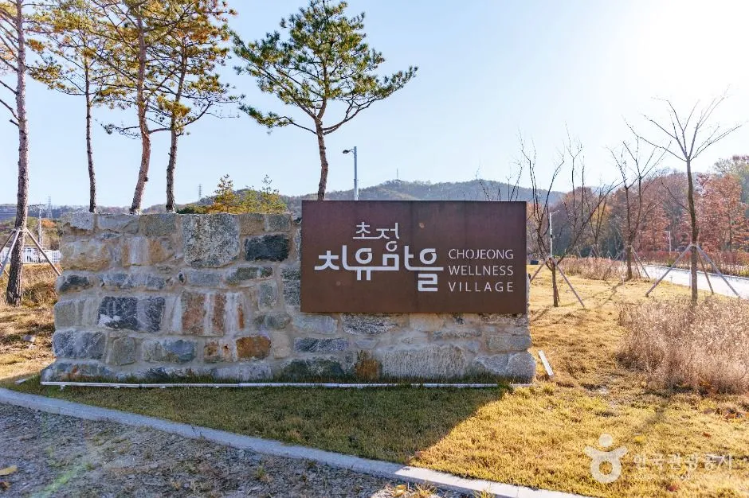
▲ 초정치유마을 입구 표지석. 상시 풍경이며 축제 현장이 아니다. 사진=한국관광공사
2. 프로그램 — 보도로 확인된 것
충청일보는 16일 개막식을 미디어 퍼포먼스로 연다고 전했고, 충청매일은 영천제(초정약수에 지역 안녕을 비는 전통 의례)·양로연(세종이 노인들을 모셔 베푼 잔치를 본뜬 행사)·어가행렬을 '마음의 선물'(애민정신)로 묶어 소개했다. 줄타기 같은 전통공연과 해례본·언해본 디지털 전시, 포럼도 소개됐다. 다만 영천제·양로연·어가행렬이 정확히 어느 날 어디서 열리는지는 확인한 보도에 나오지 않았다. 지난해(제19회, 10월 17~19일)에는 축제 일주일 전인 10월 11일 오후 3시에 사직동 분수대에서 성안길을 거쳐 청주시청 임시청사로 가는 사전 어가행렬이 열렸다(굿모닝충청 2025년 10월 1일 보도, 세종대왕·소헌왕후·대신·궁녀·취타대 70여 명). 올해 사전 행사가 있는지는 확인하지 못했다. 지난해 만족도 조사에서는 국가무형유산 줄타기가 가장 높았고 어가행렬이 뒤를 이었다고 더퍼블릭은 전했다.
| 날짜 | 내용 | 출처·상태 |
|---|---|---|
| 16일(금) | 개막식(오방색과 K-POP을 섞은 미디어 퍼포먼스), 축하공연 박서진·임찬·윤윤서 | 충청일보 보도. 개막식 시각 미확인. 출연진은 단일 매체 보도라 확인이 필요하다 |
| 17일(토) | 청주시 홍보대사의 날(요요미·윤서령·윤태경) | 충청일보 보도 단일 출처 |
| 18일(일) | 영화뮤지컬콘서트 등 폐막 프로그램 | 충청일보 보도 단일 출처 |
| 3일 공통 | 공연마당(지역 예술단체 릴레이·국가무형유산 줄타기), 체험마당(전통 공방·만들기·족욕), 참여마당(청소년 백일장·보물찾기), 전시마당(훈민정음 전시·초정행궁 미디어 아트) | 축제 소개 자료. 일자별 배정 미확인 |
| 날짜 미확인 | 영천제, 양로연, 어가행렬(세종 행차 재현) | 충청매일·충청일보 보도. 일자·시각·경로 미확인 |
| 가족 프로그램 | 삑삑이 거리공연, 요술풍선, 비눗방울 공연, 어린이 놀이터 | 충청일보 보도 |
출연진은 축제 3주 전 시점의 보도라 바뀔 수 있다. 체험비는 확인되지 않았고, 일부 체험 부스가 유료라는 정도만 소개됐다.
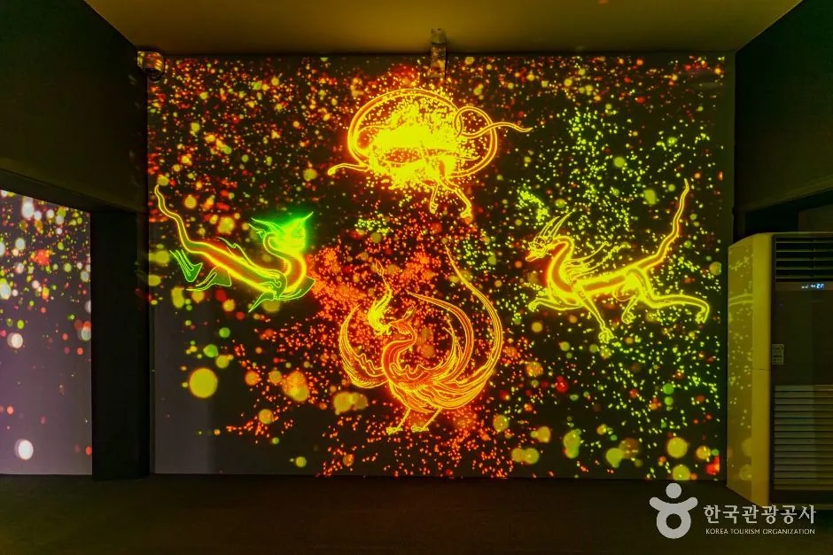
▲ 초정행궁 안의 미디어 아트 전시 공간. 상시 시설 사진이며 축제 기간 전시 내용과 같다고 확인된 것은 아니다. 사진=한국관광공사
3. 세종대왕은 초정에 며칠 머물렀나 — 숫자가 다섯 가지다
축제의 뿌리는 세종이 눈병을 치료하려고 청주 초수리(지금의 내수읍 초정리)에 행궁을 짓고 머물렀다는 기록이다. 연도는 1444년(세종 26년)이고, 봄과 가을 두 차례 다녀갔다. 문제는 체류 일수다. 자료마다 숫자가 다르다.
| 표기 | 출처 | 비고 |
|---|---|---|
| 약 60일 | 한국관광공사 TourAPI 초정약수 소개 | 실록으로 계산한 첫 번째 방문 체류와 맞는다 |
| 117~123일 | 충청타임즈가 소개한 학자 의견 | 음력 환산 차이와 두 번째 방문 기록 부족이 이유라고 설명 |
| 약 120일 | 같은 학자 추정 | "추정" 표기 |
| 121일 | 한국관광공사 TourAPI 초정행궁 소개, 더퍼블릭·서플 보도 | 가장 많이 쓰이는 숫자 |
| 123일 | 서울신문 등 일부 보도 | "조선왕조실록 기록"이라고 소개. 실록 날짜로는 재현하지 못했다 |
실록 날짜로 직접 계산해 봤다
조선왕조실록 세종 26년 기사(국사편찬위원회 번역·원문을 옮긴 위키문헌 전재본으로 대조)에서 초수리 행차 관련 기사를 찾아 날짜(간지)로 일수를 셌다. 국사편찬위 누리집은 접속이 불안정해 3월 2일 기사만 직접 열어 확인했고, 나머지는 위키문헌 전재본으로 봤다. 달 길이 차이를 피하려고 월·일이 아니라 간지(60갑자)로 계산했다.
| 날짜 | 실록 기사 | 계산 |
|---|---|---|
| 1월 27일 | 초수가 있는 곳을 아뢴 자에게 목면을 하사하고, 거둥해 안질을 치료하려 행궁을 세우게 함 | 준비 시작 |
| 2월 28일(무신) | 임금과 왕비가 청주 초수리로 거둥 | 1차 출궁 |
| 3월 2일(임자) | 거가가 초수리에 이르다 | 도착 |
| 3월 6~7일 | 우의정 신개 등이 행궁에 나아가 하례(초자소 발견, 황제 의복 하사) | 체류 중 |
| 4월 12일 | 도승지가 초수에 오래 머물 것을 청했으나 처음 정한 대로 하겠다고 함 | 연장 불발 |
| 5월 3일(임자) | 양궁이 길을 떠나 진천 북교에 머묾 | 초수리 출발. 3월 2일과 같은 간지라 정확히 60일 |
| 5월 7일(병진) | 거가가 환궁 | 2월 28일부터 68일(왕복 포함) |
| 윤7월 15일(임진) | 임금과 왕비가 청주 초수로 가려고 나서 전곶장에 이름 | 2차 출궁 |
| 8월 24일(경오) | 대신들이 "체류를 육순(60일)으로 제한하면 촉박하다"며 더 머물기를 청했으나 "육순을 넘기지 않겠다"고 하고 9월 22일 회가를 지시 | 체류 한도 60일 원칙 |
| 9월 22일(정유) | 환궁 길에 오근원평에 이르러 관찰사가 하직 | 초수리 출발은 이보다 앞 |
| 9월 26일(신축) | 환궁 | 윤7월 15일부터 69일(왕복 포함) |
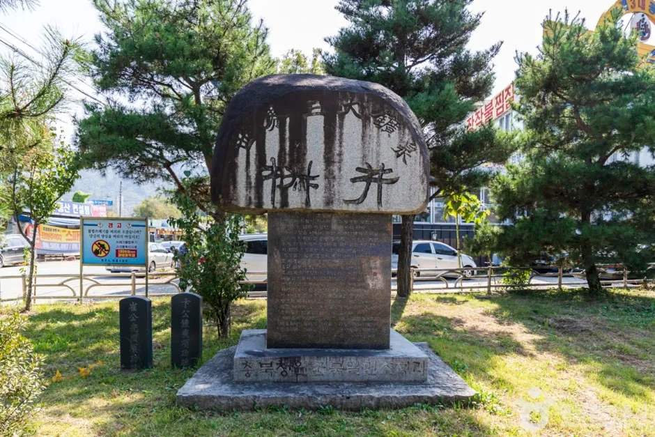
▲ 초정약수 일대의 비석. 한자가 새겨져 있다. 상시 풍경이며 축제 현장이 아니다. 사진=한국관광공사
정리하면 이렇다. 첫 번째 방문의 초수리 체류는 3월 2일부터 5월 3일까지 60일로 실록 날짜에서 정확히 나온다. TourAPI 초정약수 소개의 "60일"은 이 방문만 센 숫자로 읽힌다. 두 번째 방문은 윤7월 15일에 출궁해 9월 26일에 환궁했고, 8월 24일 기사에 체류를 육순(60일)으로 제한한다는 대목이 있다. 다만 두 번째 방문의 초수리 도착·출발 날짜를 직접 밝힌 기사는 찾지 못했다. 그래서 "60일+약 61일=121일"이라는 합산은 추정이고, 이 글에서는 "약 120일 안팎, 자료마다 117~123일"로 표기한다. 123일은 실록 날짜로 재현하지 못했다.
같은 해 10월 18일 기사에는 다음 해에도 거둥하라는 청에 "초수 행행은 내가 반드시 하지 않겠다"고 답한 대목이 있다. 실록 원문은 3월 2일 기사 바로가기에서 열어볼 수 있다.
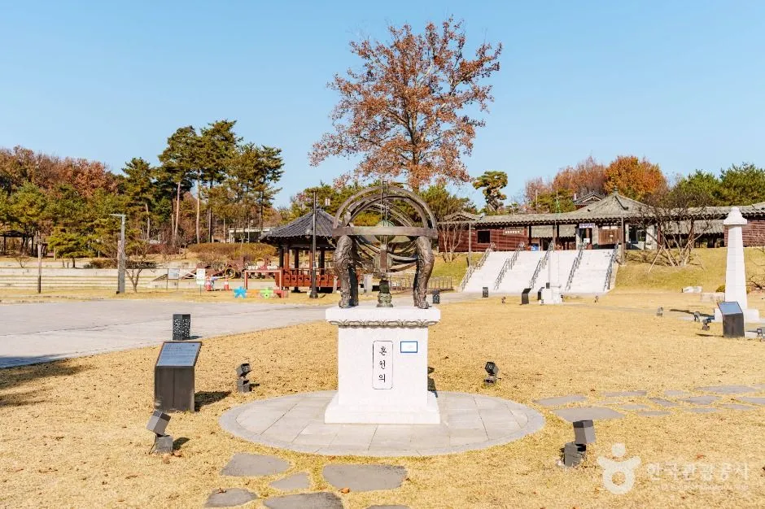
▲ 행궁 야외 정원의 조형물. 천문 기구를 본뜬 것으로 보이나 정확한 명칭은 확인하지 못했다. 상시 풍경이다. 사진=한국관광공사
"훈민정음을 마무리했다"는 말은 가설이다
충청타임즈가 소개한 "초정에서 훈민정음을 정리했다"는 주장은 정황 해석이다. 실록에는 출발 12일 전인 2월 16일에 최항·박팽년·신숙주 등에게 언문으로 《운회》를 번역하게 했다는 기사가 있다. 그러나 초수리에서 훈민정음을 마무리했다고 직접 밝힌 기록은 찾지 못했다. 반포는 1446년이다. 축제 소개 문구를 읽을 때 이 부분은 가설로 받아들이는 편이 안전하다.
4. 초정행궁 — 복원한 건물과 시설
초정행궁은 2020년 6월에 개관한 복원 시설이다. 한국관광공사 안내에 따르면 독서당, 초정원탕행각, 초정약수 체험관, 수라간, 한옥체험관이 있고, 독서당에는 훈민정음·월인천강지곡·용비어천가 등 고서 전시와 함께 세종 관련 서적 1,600여 권이 비치돼 있다. 복원 시설이어서 실제 행궁 터와 같지는 않다는 설명도 있다.
| 항목 | 내용 | 확인 상태 |
|---|---|---|
| 주소 | 충북 청주시 청원구 내수읍 초정약수로 851 | 한국관광공사 |
| 초정원탕행각 | 야외 족욕 체험, 행궁 방문객 무료 | 한국관광공사. 운영 시간은 10:00~17:00, 화요일 휴무라는 안내가 있으나 단일 출처 |
| 한옥체험관 | 12실(세종관·소현관·초정관·약수관·훈민관·정음관 등), 체크인 15:00·체크아웃 12:00, 숙박객 주차 가능 | 한국관광공사. 요금은 확인하지 못했다 |
| 숙박 문의 | 043-270-7332 | 한국관광공사 |
| 전통찻집 | 행궁 내 1층, 한국관광공사에 음식점으로 등록 | 메뉴·가격 미확인 |
| 행궁 입장료·관람시간 | 확인하지 못했다 | 공식 안내를 찾지 못함 |
| 개관 취지 | 2020년 6월 개관, "세종대왕이 초정에 머물렀던 121일"을 기억하자는 취지 | 한국관광공사 소개문 |
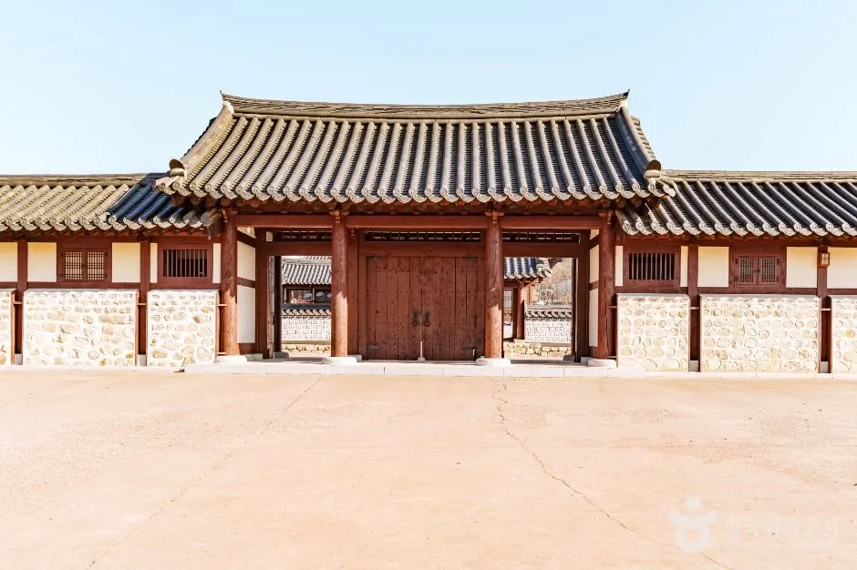
▲ 행궁 정문 일대. 상시 풍경이며 축제 현장이 아니다. 사진=한국관광공사
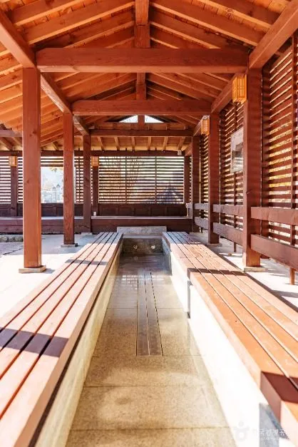
▲ 초정원탕행각의 족욕 시설. 상시 시설 사진이다. 사진=한국관광공사
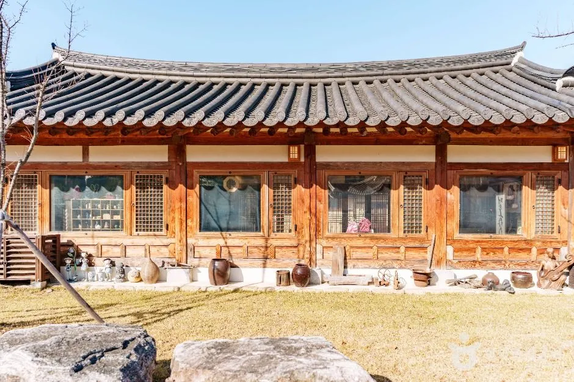
▲ 초정행궁 전통찻집 외관. 상시 풍경이다. 사진=한국관광공사
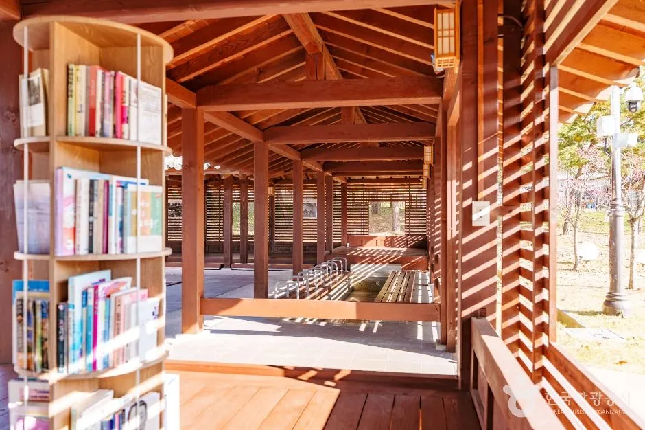
▲ 행궁 안 책이 비치된 열람 공간. 상시 시설 사진이다. 사진=한국관광공사
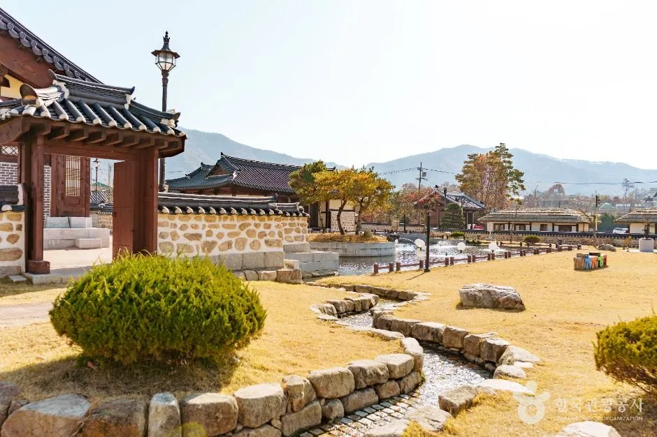
▲ 행궁 마당을 가로지르는 작은 물길. 상시 풍경이며 축제 현장이 아니다. 사진=한국관광공사
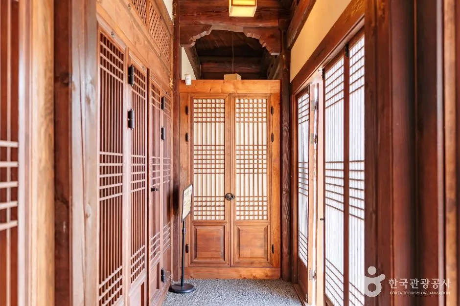
▲ 행궁 한옥 안쪽 복도. 상시 시설 사진이다. 사진=한국관광공사
한옥체험관 객실 요금(2026년 6월 기준)
한국관광공사 숙박 정보에는 객실 12실, 객실 유형별 요금이 올라 있다. 아래 금액은 "비수기·성수기 최저요금" 항목의 값이며 2026년 6월에 작성된 정보라고 명시돼 있다. 10월 축제 주말에 어느 요금이 적용되는지, 남은 객실이 있는지는 확인하지 못했다. 요금과 예약은 043-270-7332로 문의하라고 안내된다.
| 객실 | 면적 | 기준·최대 인원 | 비수기 | 성수기 |
|---|---|---|---|---|
| 세종관 하나 | 33㎡ | 4명·6명 | 120,000~160,000 | 160,000 |
| 세종관 둘 | 37㎡ | 6명·8명 | 160,000~200,000 | 200,000 |
| 소헌관 하나 | 40㎡ | 4명·6명 | 140,000~180,000 | 180,000 |
| 소헌관 둘 | 32㎡ | 4명·6명 | 110,000~150,000 | 150,000 |
| 초정관 하나 | 29㎡ | 4명·6명 | 100,000~140,000 | 140,000 |
| 초정관 둘 | 32㎡ | 4명·6명 | 110,000~150,000 | 150,000 |
| 약수관 하나 | 32㎡ | 4명·6명 | 110,000~150,000 | 150,000 |
| 약수관 둘 | 32㎡ | 4명·6명 | 150,000 | 150,000 |
| 훈민관 하나 | 40㎡ | 4명·6명 | 140,000 | 180,000 |
| 훈민관 둘 | 32㎡ | 4명·6명 | 110,000~150,000 | 150,000 |
비수기 칸의 두 값은 TourAPI의 최저요금 두 항목(평일·주말로 보이나 정의는 확인하지 못했다)이다. 객실에는 에어컨·TV·냉장고·인터넷이 있고 취사는 불가능하다고 등록돼 있다. 객실 사진은 한국관광공사 이용 허락 범위(변경금지)가 달라 이 글에 싣지 않았다.
5. 초정약수 — 마셔도 되나, 얼마나 나오나
실록에도 초수는 자주 나온다. 4월 12일 기사에서는 여러 대군이 승정원에 "초수가 자못 신험이 있으니 더 머물기를 청하라"고 말했다. 한국관광공사 소개에 따르면 초정약수는 내수읍 초정리 약수터에서 지하 약 100m 석회암층의 탄산수가 솟는 곳이다. 수도를 틀어 마시거나 떠 갈 수 있게 정비돼 있고, 약수 음용 시간은 08:00~21:00, 연중무휴로 안내된다. 동절기를 제외하고 족욕 공간도 있다. 문의는 청주시 관광과(043-201-2042~4)다.
| 항목 | 내용 | 주의 |
|---|---|---|
| 음용 | 약수터에서 마시거나 떠 갈 수 있음 | 한국관광공사. 수질 검사 결과는 확인하지 못했다 |
| 용출량 | 하루 약 8,500L(관광공사 소개) | 다른 자료는 하루 약 358톤으로 달라 확정하지 못했다 |
| "세계 3대 광천수" | 미국 샤스터·독일 아폴리나리스와 함께 꼽는다는 한국관광공사 소개 | 누가 어떤 기준으로 순위를 매겼는지 학술 근거는 확인하지 못했다. 홍보 문구로 읽는 편이 안전하다 |
| 발견 시기·성분 소개 | "약 6백 년 전 발견", 물속 라듐 성분 때문으로 추정 | 한국관광공사 소개문. "추정"이라는 단서가 붙은 설명으로 검증된 수치는 아니다 |
| 탄산 함량·효능 | 수치 확인하지 못했다(환경부·충북보건환경연구원 검사 결과도 찾지 못함) | "눈병·피부병에 효험" 설명은 전해 오는 이야기로 읽고 의학적 효능으로 받아들이지 않는다 |
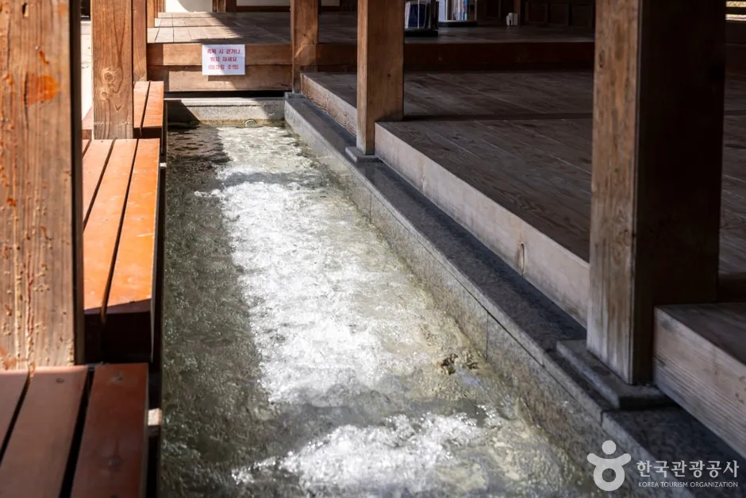
▲ 초정약수 관련 족욕 시설의 수로. 상시 시설 사진이며 축제 현장이 아니다. 사진=한국관광공사
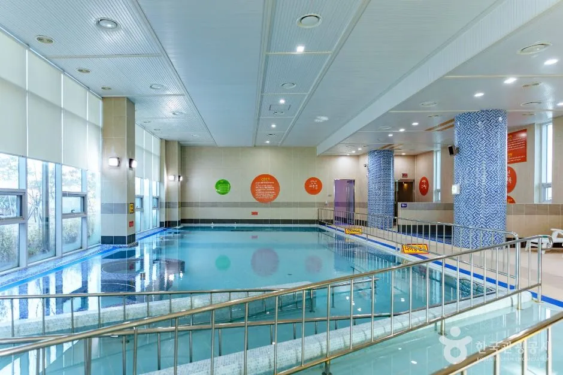
▲ 초정치유마을의 실내 풀. 상시 시설 사진이며 축제 현장이 아니다. 사진=한국관광공사
6. 초정치유마을 — 이용 요금과 시간
초정치유마을은 초정광천수(냉천)를 쓴 탄산와추풀·개인광천욕과 스파치유풀, 명상·음식 치유실을 갖춘 시설이다. 한국관광공사 이용 정보에는 아래 요금이 올라 있다. 축제 기간에 같은 요금과 시간으로 운영되는지, 축제 연계 무료 프로그램이 있는지는 확인하지 못했다. 지난해에는 축제 인증 뒤 10월 28~30일 치유 프로그램을 무료 체험하는 행사가 있었다.
| 항목 | 내용 |
|---|---|
| 평일 요금 | 성인(14세 이상) 20,000원, 어린이(13세 이하) 10,500원 |
| 주말 요금 | 성인 25,000원, 어린이 13,300원 |
| 운영 시간 | 하절기(3~10월) 09:00~19:00, 입장 마감 18:00 / 동절기(11~2월) 09:00~18:00, 입장 마감 17:00 |
| 축제 기간 적용 | 16일(금)은 평일, 17~18일은 주말 요금이 적용될 것으로 보인다. 10월이므로 하절기 시간(09:00~19:00). 짐작이며 평일·주말 기준 정의는 확인하지 못했다 |
| 휴관 | 매주 월요일, 설·추석 당일 |
| 주차 | 무료 |
| 문의 | 043-820-7260 |
| 유의 | 요금은 변동될 수 있고 프로그램별 운영 기간이 다르다고 안내됨 |
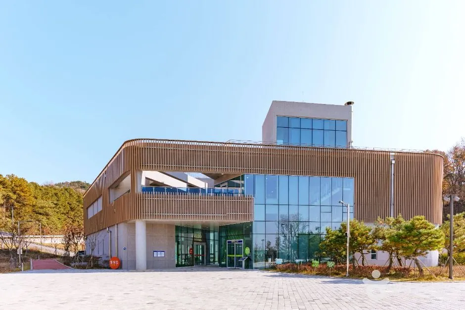
▲ 초정치유마을 건물 외관. 상시 풍경이다. 사진=한국관광공사
7. 가는 길과 주차 — 못 찾은 것이 더 많다
초정행궁 주소는 청원구 내수읍 초정약수로 851, 치유마을은 초정약수로 880이다. 자차라면 이 주소를 내비에 넣는 것이 가장 확실하다. 행궁 숙박객과 치유마을 방문객 주차는 가능하다고 안내되지만, 축제 기간 임시주차장, 셔틀버스, 교통 통제 구간은 공식 자료에서 확인하지 못했다. 지난해 16만 명이 찾았다는 보도를 감안하면 주말에는 혼잡할 가능성이 있다고 짐작할 뿐 근거는 없다. 대중교통은 좌석버스 101번이 초정약수종점까지 간다는 안내가 한 곳에서 확인됐지만 단일 출처이고 축제 기간 운행 변경은 확인하지 못했다.
| 장소 | 주소 | 주차 | 근거 |
|---|---|---|---|
| 초정행궁 | 초정약수로 851 | 숙박객 주차 가능 | 한국관광공사. 방문객 주차는 확인하지 못했다 |
| 초정치유마을 | 초정약수로 880 | 무료 | 한국관광공사 |
| 초정약수(약수터) | 내수읍 초정리 일대 | 가능 | 한국관광공사. 축제 기간 혼잡 시 이용 여부는 미확인 |
같은 주말, 같은 청주권에서는 2026 대한민국 산림박람회(청원구 밀레니엄1로 18, 10월 16~18일)도 열린다. 한국관광공사 좌표로 계산한 초정행궁과의 직선거리는 약 11.6km다. 도로 거리와 소요 시간은 확인하지 못했고, 박람회 일정과 영동 정원박람회 연결 방법은 산림박람회와 영동 정원박람회 자차 코스 기사에 따로 정리했다. 같은 16~18일에는 목포항구축제와 마포나루 새우젓축제도 열린다.
8. 하루 일정 구상 — 짐작이 섞여 있다
| 상황 | 구상 | 근거 |
|---|---|---|
| 16일 개막일 | 영천제·양로연·개막식 시간 확인 후 도착. 개막식 시각 미확인 | 시각 공식 자료 없음 |
| 17일(토) | 공연 인파가 많을 가능성, 오전 도착 후 행궁·원탕행각 먼저 | 짐작 |
| 18일(일) | 폐막일 프로그램 확인 후 치유마을 이용 검토 | 치유마을 요금·시간은 관광공사 정보 |
| 족욕 목적 | 원탕행각은 10:00~17:00 안내가 있어 늦은 저녁 이용은 어려울 수 있음 | 단일 출처, 확인 필요 |
| 산림박람회와 묶기 | 직선거리 11.6km, 하루 두 곳은 시간 배분 필요 | 도로 시간 미확인 |
✅ 출발 전 체크리스트
· 10월 16~18일, 내수읍 초정행궁·초정치유마을 일원, 입장 무료(체험 일부 유료)
· 개막식 시각·주차·셔틀·교통 통제·체험비는 공식 자료에서 미확인, 청주시 문화관광 누리집 확인
· 체류 일수는 자료마다 60~123일로 다르다. 실록 날짜로는 1차 초수리 체류 60일만 확인, 121일은 합산 추정
· 초정약수 음용 08:00~21:00(연중무휴 안내), 원탕행각 족욕 10:00~17:00(단일 출처)
· 치유마을 평일 성인 20,000원·주말 25,000원, 월요일 휴관
· 같은 주말 산림박람회와 직선 약 11.6km
9. 정리
제20회 세종대왕과 초정약수축제는 2026년 10월 16일부터 18일까지 내수읍 초정행궁·초정치유마을 일원에서 열리며, 주제는 "초정에서 만난 세종의 선물"이다. 16일 영천제·양로연·개막식과 16~18일 공연·체험·전시가 보도됐다.
세종의 초정 체류는 1444년 두 차례 방문이라는 설명이 일반적이지만 일수는 60일, 117~123일, 약 120일, 121일, 123일로 자료마다 다르다. 실록 날짜로 직접 계산되는 것은 첫 번째 방문의 초수리 체류 60일이고, 121일은 가을 방문까지 합친 추정이다. 개막식 시각, 주차장, 셔틀, 교통 통제, 체험비, 행궁 입장료는 확인하지 못했으니 출발 전에 공식 안내를 확인하자.